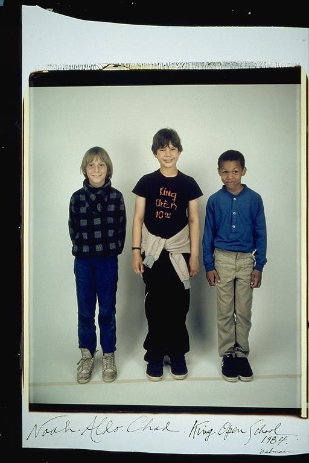

Pals: Boys Who Grew Up Together
elsadorfman.com/pals
Aldo: This is a funny picture, cause I not only look quite silly, but notice I'm a bit taller than the other two guys. It's a reminder that up until 18, everyone was growing so much. One year you were the tallest, and the next, the same as everyone else. And I also can't help but recognize, how modestly we kids were dressed, in comparison to kids these days. Most clothes were hand me downs.

elsad@comcast.net